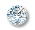
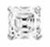
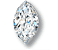
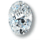
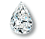
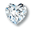
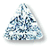

Diamond Shapes
From traditional round brilliant cuts to more interesting marquise diamond, oval diamond and heart shapes…
These days, diamonds come in all shapes imaginable and diamond cutters are still experimenting to discover more.
A diamond cutter's skill will produce a diamond of the greatest size with the fewest flaws and the most brilliance from the rough stone.
|  | Round | This shape has set the traditional standard for all diamond shapes. Over 75% of the diamonds sold today are Round Brilliant. Its 58-facet cut is calibrated to achieve the maximum in fire and brilliance. |
| Princess | This is a square shape with many facets. A relatively new cut that often finds its way into solitaire engagement rings. It is especially attractive with longer fingers. | |
| Emerald | This is a rectangular shape with cut corners. Inclusions and inferior colour can be more pronounced in this particular cut so clarity and colour should be looked at carefully and time taken when a choice is made. | |
|  |
Asscher | It is a stepped square cut, often called the "square emerald cut" and like an emerald cut, the Asscher has cropped corners. |
|  |
Marquise | This shape is elongated with pointed ends. It is beautiful as a solitaire or when matched with smaller complementary diamonds. |
|  |
Oval | Oval is a symmetrical design which is even and appeals to many small handed women as it seems to elongate hands and fingers. |
| Radiant | This is a square or rectangular shape. The elegance of the emerald cut and the brilliance of the round shape marks this cut. 70 facets maximize the effect of it's colour refraction. | |
|  |
Pear | This cut combines the best of the oval and marquise shapes. It is the hybrid shape that looks like a sparkling teardrop. It beautifully compliments the average size hand and fingers and is gorgeous for pendants and earrings. |
|  |
Heart | A pear shaped diamond with a cleft on the top. The extraordinary skill of the cutter determines the beauty of this cut. |
| Cushion | Late 19th and early 20th style antique type shape. Remnants of the "Old Mine Cut", a deep cut with large facets. | |
|  |
Trilliant | The main and outstanding feature of this diamond is its unique triangle form. The trilliant cut is created with equal sides and usually contains 50 facets. |